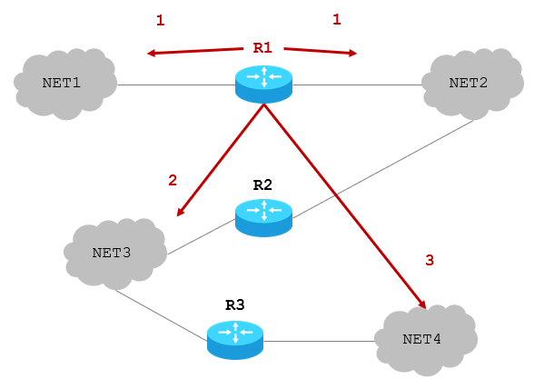
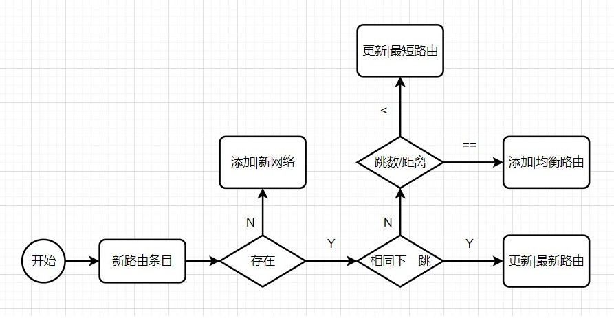
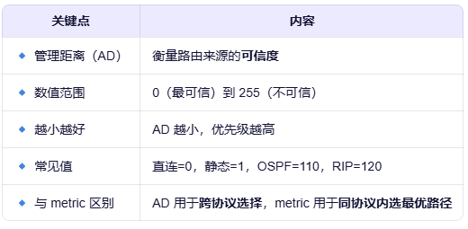

路由信息协议
@RIP- 概述 Overview
- RIP-Routing Information Protocol
- 路由信息协议，属于内部网关路由协议IGP
- 当前版本为RIP2
- 每个路由器维护一组从它自己到其它每一个目的网络的距离向量记录
- 基于距离矢量 DV - Distance Vector的路由选择协议，使用跳数Hop count作为度量Metric到目标网络的距离，即：路由器到目标网络所经过的路由器个数
路由器到直连网络不需要经过其它路由器，所以跳数是1，即：距离为1 - 早期为0
每经过一个网络，跳数+1
最大距离15
16表示不可达
- 使用 UDP 协议，按照 固定时间 间隔，以 广播 RIP报文的方式，和
相邻 路由器交换 全部 路由信息 - 分布式路由选择协议
相邻 - Who
全部 - What
固定时间间隔 - When
- 特点 Features
- RIP简单的认为：距离越短，路由质量越高
- RIP最大支持15跳，适合小型网络
- RIP具备负载均衡：当路由等价时，轮流使用路由
- RIP通过3个定时器动态维护路由
- 定时器 Timer
- 更新定时器
每30s更新一次
通常会有一个[-5，+5]的随机偏移量
- 失效定时器
最大时间180s
每个条目被添加或被更新时，都会重新开始计时
超时，该条目被标记为无效路由，但不会删除，只是不会被RIP广播出去
- 删除定时器
最大时间240s
超过180s会被标记为无效条目
再经过60s，就会被彻底删除
- 更新规则 Rules
- 先改造交换/收到的路由信息再维护自己的路由信息
- 目标都为相邻路由
- 跳数都+1
- 比较目标网络是否存在：
- 不存在，则添加路由 - 发现新网络
- 存在，则比较下一跳路由器：
- 相同：则更新路由 - 最新的路由信息
- 不同：则 比较距离：
- 新条目小于当前条目，则更新路由 - 新条目更具优势
- 新条目等于当前条目，则添加新条目 - 负载均衡
- 新条目大于当前条目，不做处理 - 新条目劣势
- 改造路由器R4的信息
目标都为R4
跳数都+1
- Net1没有，添加
- Net2：都经过R4转发，之前需要3跳，现在需要5跳，说明网络发生了变化，应更新
- Net3：之前需要4跳；现在只需要2跳；应更新
- 最终路由器R6路由表为
- 路由器D收到C发送的RIP广播报文，并进行改造：所有的距离+1；且下一跳路由都是C
- 路由器D根据规则更新路由表信息
- N2路由条目：都是经过C转发；之前经过C到N2需要2跳；现在经过C到N2需要5跳，所以5跳是最新的路由：2->5
- [思考]路由跳数的可能变化
- N3路由条目：没有该路由，说明发现了新网络，添加新路由
- N6路由条目：之前经过F到N6需要8跳；现在经过C到N6只需要5跳，说明新路由更短，应更新旧路由；8->5，F->C
- N8路由条目：之前经过E到N8需要4跳；现在经过C到N8也需要4跳，所以是等价路由，应添加新路由以便均衡负载
- N9路由条目：之前经过F到N9需要4跳；现在经过C到N9却需要6跳，所以新路由不好，保留旧路由
- 路由器D的路由表最终结果为：

| 目标网络 | 距离 | 下一跳 |
| Net1 | 1 | - |
| Net2 | 1 | - |
| Net3 | 2 | R2 |
| Net4 | 3 | R2 |
简单
Simple
小型
Mini
均衡
Balance
动态
Dynamic
更新
Time1

失效
Time2
清除
Time3
1. 改造收到的路由信息
2. 更新自己的路由信息

原路由信息包括各计时器均保留
[ ] 已知路由器 R6 。现在收到相邻路由器 R4
发来的路由更新信息，请更新路由器 R6 的路由表。
| 目的网络 | 距离 | 下一跳路由器 |
|---|---|---|
| Net2 | 3 | R4 |
| Net3 | 4 | R5 |
| 目的网络 | 距离 | 下一跳路由器 |
|---|---|---|
| Net1 | 3 | R1 |
| Net2 | 4 | R2 |
| Net3 | 1 | 直接交付 |
| 目的网络 | 距离 | 下一跳路由器 |
|---|---|---|
| Net1 | 4 | R4 |
| Net2 | 5 | R4 |
| Net3 | 2 | R4 |
| Net1 | 4 | R4 |
| Net2 | 5 | R4 |
| Net3 | 2 | R4 |
| 目的网络 | 距离 | 下一跳路由器 | 说明 |
|---|---|---|---|
| Net2 | 5 | R4 | 更新路由 |
| Net3 | 2 | R4 | 更新路由 |
| Net1 | 4 | R4 | 添加路由 |
[ ] 已知路由器D的路由表；路由器C的路由表；分析：经过C的路由交换后，D的路由表信息
| 目标网络 | 距离 | 下一跳 |
| N1 | 7 | A |
| N2 | 2 | C |
| N6 | 8 | F |
| N8 | 4 | E |
| N9 | 4 | F |
| 目标网络 | 距离 | 下一跳 |
| N2 | 4 | ?? |
| N3 | 8 | ?? |
| N6 | 4 | ?? |
| N8 | 3 | ?? |
| N9 | 5 | ?? |
| 目标网络 | 距离 | 下一跳 |
| N2 | 4+1 | C |
| N3 | 8+1 | C |
| N6 | 4+1 | C |
| N8 | 3+1 | C |
| N9 | 5+1 | C |
| 旧路由 | 新路由 | 最终路由 | ||||||
| 目标网络 | 距离 | 下一跳 | 目标网络 | 距离 | 下一跳 | 目标网络 | 距离 | 下一跳 |
| N2 | 2 | C | N2 | 5 | C | N2 | 5 | C |
| 旧路由 | 新路由 | 最终路由 | ||||||
| 目标网络 | 距离 | 下一跳 | 目标网络 | 距离 | 下一跳 | 目标网络 | 距离 | 下一跳 |
| N3 | 9 | C | N3 | 9 | C | |||
| 旧路由 | 新路由 | 最终路由 | ||||||
| 目标网络 | 距离 | 下一跳 | 目标网络 | 距离 | 下一跳 | 目标网络 | 距离 | 下一跳 |
| N6 | 8 | F | N6 | 5 | C | N6 | 5 | C |
| 旧路由 | 新路由 | 最终路由 | ||||||
| 目标网络 | 距离 | 下一跳 | 目标网络 | 距离 | 下一跳 | 目标网络 | 距离 | 下一跳 |
| N8 | 4 | E | N8 | 4 | C | N8 | 4 | E |
| N8 | 4 | C | ||||||
| 旧路由 | 新路由 | 最终路由 | ||||||
| 目标网络 | 距离 | 下一跳 | 目标网络 | 距离 | 下一跳 | 目标网络 | 距离 | 下一跳 |
| N9 | 4 | F | N9 | 6 | C | N9 | 4 | F |
| 目标网络 | 距离 | 下一跳 | 说明 |
| N1 | 7 | A | 原有路由 |
| N2 | 2->5 | C | 最新路由 |
| N3 | 9 | C | 添加路由 |
| N6 | 8->5 | F->C | 更新路由 |
| N8 | 4 | E | 保留路由 |
| N8 | 4 | C | 添加路由 |
| N9 | 4 | F | 保留路由 |
命令 Command
- 配置
- 查看
- 查看协议
- 特权模式下
- 查看特定路由
Router(config)#router rip 使用RIP路由协议；默认没有开启RIP路由； Router(config-router)#version 2 使用版本2，支持CIDR；版本1不支持； Router(config-router)#no auto-summary 取消路由聚合； Router(config-router)#network x.x.x.x 设置与相邻网络的动态路由； Router(config-router)#network y.y.y.y 设置与相邻网络的动态路由；
Router>show ip route rip 128.1.0.0/26 is subnetted, 2 subnets R 128.1.2.128 [120/1] via 128.2.1.1, 00:00:06, GigabitEthernet0/0 R 128.1.2.192 [120/1] via 128.2.1.1, 00:00:06, GigabitEthernet0/0

Router#show ip protocol Routing Protocol is "rip" Sending updates every 30 seconds, next due in 20 seconds Invalid after 180 seconds, hold down 180, flushed after 240 Outgoing update filter list for all interfaces is not set Incoming update filter list for all interfaces is not set Redistributing: rip Default version control: send version 2, receive 2 Interface Send Recv Triggered RIP Key-chain GigabitEthernet0/0 22 GigabitEthernet0/1 22 Automatic network summarization is not in effect Maximum path: 4 Routing for Networks: 128.2.0.0 192.168.1.0 Passive Interface(s): Routing Information Sources: Gateway Distance Last Update 128.2.1.1 120 00:00:10 Distance: (default is 120)
Router#show ip route 128.1.2.128
Routing entry for 128.1.2.128/26
Known via "rip", distance 120, metric 1
Redistributing via rip
Last update from 128.2.1.1 on GigabitEthernet0/0, 00:00:09 ago
Routing Descriptor Blocks:
* 128.2.1.1, from 128.2.1.1, 00:00:09 ago, via GigabitEthernet0/0
Route metric is 1, traffic share count is 1
Summary & Homework
- Summary
- RIP的特点
- RIP维护路由方法
- Homework
- 路由器到直连网络的距离是1；其它非直连网络，每经过一个网络，距离加1（）。
- 采用RIP协议的路由器只和临近的路由器交换路由信息（）。
- RIP使用UDP协议发送路由信息，其它路由器监听端口520来接收RIP更新（）。
- RIP路由条目的有效期是（）秒，失效期是（）秒，超过（）秒，则被删除。
- 如何理解RIP的"坏消息传播的慢"？
- 已知路由器B的路由表；收到的路由器C交换来的路由信息。求路由器B更新后的路由表
- Reading
| 目的网络 | 距离 | 下一跳路由器 |
|---|---|---|
| N1 | 7 | A |
| N2 | 2 | C |
| N6 | 8 | F |
| N8 | 4 | E |
| N9 | 4 | F |
| 目的网络 | 距离 | 下一跳路由器 |
|---|---|---|
| N2 | 4 | ？ |
| N3 | 8 | ？ |
| N6 | 4 | ？ |
| N8 | 3 | ？ |
| N9 | 5 | ？ |